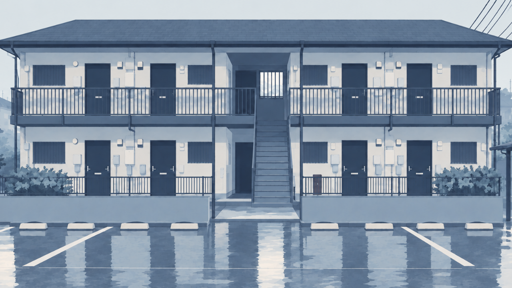

CASE / 001
INDEPENDENT GAME CIRCLE — GISHODO
在りえない物語を、
あなたの手へ。
気づいたときには、もう遅い。
日常の隙間に潜む違和感と、
思い込みの向こう側にある真実。
ミステリー・ホラー・怪異を中心に、
物語とゲームを制作する創作サークルです。
OUR GAMES / 作品
制作ゲーム。
あなたが見ているものは、本当に真実だろうか。

CASE / 002探索 × ミステリー企画・制作中
『死人に口なし、神のみぞ知る』
Mystery / Suspense ADV
友人の死をきっかけに、日常の裏に隠された秘密を追う。
証拠を調べ、言葉の隙間から真実に迫る探索ミステリー。
MORE STORIES WILL FOLLOW 次の物語は、まだ秘密。
ABOUT / サークルについて
嘘と真実の、
境界を描く。
偽書堂（ぎしょどう）は、ミステリー、ホラー、怪異、叙述トリックを中心に制作するインディーゲームサークルです。
日常に溶け込む小さな違和感や、見方が変わることで意味が反転する物語を大切にしています。シナリオ・イラスト・演出の制作では、人の創作とAIツールを組み合わせ、新しい表現に挑戦しています。
INFORMATION
お知らせ。
現在、お知らせはありません。
CONTACT
物語の、その先で。
ご感想・お問い合わせは、公開中の連絡先からお送りください。